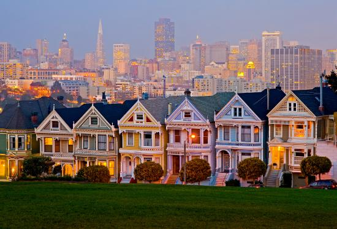
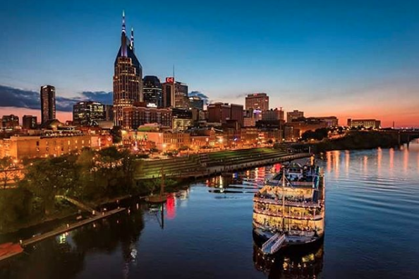
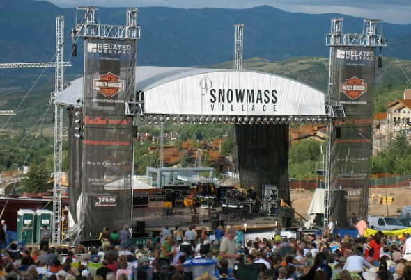

North America Destinations
North America - There are so many places to go in the states that would blow your mind. Locals and travelers have contributed information about the places they know and love so that you can have an awesome trip there. The list is ever growing, so please contribute to continue to expand it!
Ilana's contribution 
for more info click here
San Francisco
This is one of my personal favorite cities in the whole world. The steep hills, the big city elements with access to the incredible nature, and the spunky weirdness that makes it so unique, it is no surprise that people often explain that they just came for a visit but found themselves there 50 years later.
Restaurants
My favorite two places that are the nicer side are Foreign Cinema and Absinthe. Slanted door is chinese food with a nice view of the Bay Bridge
- Nopa
- Burma Superstar
- For sushi- my favs are ryoko and elephant sushi. Ryoko is more traditional and delicious and elephant is more unique/ an experience (like sushi on fire)
- Lolos Mexican in the mission
- Gioia - nice pizza and Italian on polk
- Sushiritto- burrito sized sushi
- Marengo on union
- Get Italian food off Columbus in little Italy - every one I've been to is tasty! Or late night pizza at Golden Boy
- Papalote or el farolito for burritos
- El techo de lolinda- rooftop Mexican in the mission
Hikes
- Marin Headlands: If I don't have a ton of time, but I want to a great view of the GG Bridge and "get out of the city" this is my #1 pick. It is not too challenging and there are a number of options of areas to walk around out there. You can make a stop at Kirby Cove, and can keep going up the coast to the point bonita light house. (Be sure to look up if the light house is open if you want to go more than up to it). You can keep going all the way to Stinson Beach or Tennessee Valley, but this is a much longer way of getting to those places if that is your destination. A nice place to stop and get a drink or something here is Cavallo Point.
- Muir Woods: Get to see the redwoods just a short drive out of the city. There is like one main short loop, and then lots of offbranches that you can follow along. You can't go wrong, it's so beautiful and the trees are really something special. To get there, you will go through lots of great towns, Sausalito, Tiburon, Mill Valley, where you can stop for lunch or just explore.
- Stinson beach and Tenesseee valley: Both further Northwest than the Marin Headlands, but beautiful. Tenessee Valley offers a nice walk to the beach, but if you're doing this, you might as well go a little further to Stinson as it is my favorite beach in the area.
- Big Sur: Should you have much more time, journey south to Big Sur. Spend the night at the Pigeon Point Hostel (further north, but they have a hot tub built into the cliff which is nice!) or the River Inn (actually in Big Sur). On your way down, stop into the town of Pescadero for some artichoke bread/dip, the Monterey Bay Aquarium, and Pie Ranch for whatever they are serving up. Once or twice a month they have big barn parties where they bring in a band. I've done a number of hikes in the Andrew Molero state park and they are all so nice.
- You can also rent bikes, bike the bridge, have lunch in sausalito and take the ferry back.
- In the city: If you don't have enough time to leave the city, there are also great hikes/walks in the city.
- Lands End: This is a great one. You can start at Sutro Baths, and walk along the edge of the world and view the other side of the bridge and the bay. You'll see the pacific ocean and maybe some dolphins too. This one can be touristy too, but really beautiful.
- A city walk I really like: Here you can see the Bay, Bridge, Alcatraz, Northern Suburbs some. Walk along Fillmore Street, between Bush and Jackson-ish. Fillmore has lots of cute shops/restuarants. Then Detour to the Lyon Street Steps, broadway and Lyon street, and walk down through the Palace of Fine Arts. Take a right when you hit the Marina, you'll the bridge and its a nice walk along the water. You can then take a left and walk through Chrissy field or right to walk towards Fort Mason which will lead you all the way through the tip of North Beach and ultimately to the Embarcadero. If you prefer to walk around cute shops and restaurants, take a right on Chestnut rather than walking all the way to the water. If you time this right and get to Fort Mason on Friday Afternoon/early evening, you might hit a food truck festival called Off the Grid.
- The Presidio has tons of nice hikes in the city too!
- Twin Peaks: Probably the most famous view of the city, more touristy.
- Mount Davidson: Off the beaten path and has a giant cross sculpture and overlooks the city.
Activities
- Billy Goat Hill
- Palace of Fine Arts
- Fortune Cookie Factory
- Noriega mosaic, seward slides, lyon street steps
- Bay to Breakers
- Bike the Bridge
- Dolores Park
- Alcatraz
- GG Park: see the buffalo, paddle boat, outside lands, nightlife at the academy of sciences, de young museum, botanical gardens
- Late night street meat
- Sing along at the Castro Theatre
- Karaoke at the Mint
- Bi-Rite Icecream
- Pride Festival
- Ferry Building (esp. on Saturdays)
- Golden Gate bakery, macaroons and egg tart
- Alamo Square, painted ladies, full house house
- Bob's donut challenge
- yoga at grace cathedral
- fleet week
- ocean beach bonfire
- Nature Friends Tourist Club
- brunch at the starlight room
- Topless Baker Beach
- Tonga Room
Ilana's contribution
for more info click here
Houston
Beyonce is just one reason to have a hot-spot for houston. Houston has so many reasons to be loved. Though I wouldn't necessarily put it high on your places to travel and be a tourist, if you have some time in Houston and are looking for things to do, you've come to the right place. Though I grew up in Houston, I haven't lived there long-term since I was 18, so here you'll find contributions from people who have lived there the past few years, combined with some of my favorite things from growing up too!

Restaurants: The Dunlavy, Houston's, Goode Co. BBQ, Goode Co. Seafood, Goode Co. Taqueria, Underbelly, Uchi, Qin Dynasty, Ninfas on Navigation, Empire Cafe...
Activities: They have recently built up the Buffalow Bayou which looks super nice and offers great walking and bike paths. I am always partial to walking around Rice (assuming it is not too hot). Houston houses the Rockets, Astros, Texans, and the Dynamo which are all fun sporting events to attend. Houston has tons of museums that are definitely worth checking out and lots of art shows and festivals. Most importantly, the Houston Rodeo is my favorite time of year. Sausage on a stick, fried cheesecake, mutton bustin, roller coasters and concerts - nuff said. Plan your trip to be in Houston in March and check out the lineup.
Activities: They have recently built up the Buffalow Bayou which looks super nice and offers great walking and bike paths. I am always partial to walking around Rice (assuming it is not too hot). Houston houses the Rockets, Astros, Texans, and the Dynamo which are all fun sporting events to attend. Houston has tons of museums that are definitely worth checking out and lots of art shows and festivals. Most importantly, the Houston Rodeo is my favorite time of year. Sausage on a stick, fried cheesecake, mutton bustin, roller coasters and concerts - nuff said. Plan your trip to be in Houston in March and check out the lineup.
Meredith's contribution
for more info click here
Nashville
The Vegas of the south, Nashville is home to some of the best restaurants, live music, and nightlife. Having grown up there, I know the city in and out, and love it! I wouldn't recommend staying any less than 3 days, that way you get at least a little taste of why Nashville is so great.
If you had 3 days in Nashville, here's a sample itinerary:
Day 1: Broadway St. for honky tonks, boot shopping, live music; walk the pedestrian bridge; pedal tavern; catch some live music at ascend amphitheater or a Sounds game at the new stadium
Day 2: bowling and brunch at Pinewood Social; walk through 12th south for amazing shopping, restaurants, bars, and coffee; tour of Ocean Way studios; drinks at Acme
Day 3: coffee and breakfast at Barista Parlor; hike Radnor Lake; tour Country Music Hall of Fame; Cebtennial Park to see the Parthenon; live music at the Bluebird; drinks at Patterson House
Favorite Restaurants: 5th and Taylor, Silo, Kayne Prime, Virago, Rosepepper Cantina, The Pharmacy, Patterson House, Catbird Seat, Hattie B's, Wild Cow, Etch, Giovanni's
Favorite Activities: Radnor Lake, 12th South, Pinewood Social, Acme, Sounds game, Concert at Ascend, Pedal Tavern, Coffee- Barista Parlor, Crema, 8th and Roast, Frothy Monkey
Ilana's contribution
for more info click here
Snowmass, Colorado
Snowmass Village is 20-30 minutes outside of Aspen and provides an oasis to hikers and Texans avoiding the summer heat. It is close enough to Aspen and nearby areas, but is so tranquil and beautiful. Snowmass Mountain offers some of the most variety of slopes and biggest mountains in the area.
Snowmass Restuarants
- Taster's Pizza - easy to pickup/deliver. bbq chicken pizza and a chopped salad
- il Poggio - nice italian food in the village
- Brothers Grill - awesome for on the slope, quesadillas are my favorite
- Fuel - great baker, coffee pickup
- Stew Pot - always a classic
- The Viceroy brunch is great
- Take a bike ride down to Woody Creek Tavern
- Lots more options Down-valley in Basalt or in Aspen
Snowmass Area Hikes
- Ditch Trail
- Rim Trail
- Maroon Lake/ Crater Lake
- Grottos
- Lost Man Trail
- Smuggler
- Electric Pass/ Cathedral Lake
Snowmass Area Activities
- Hiking
- Biking
- rafting
- Bowling/Mini Golf
- Hiking/Camping
- Golf
- Horseback Riding
- Skiing/Snowboarding
- Concerts on the Mountain